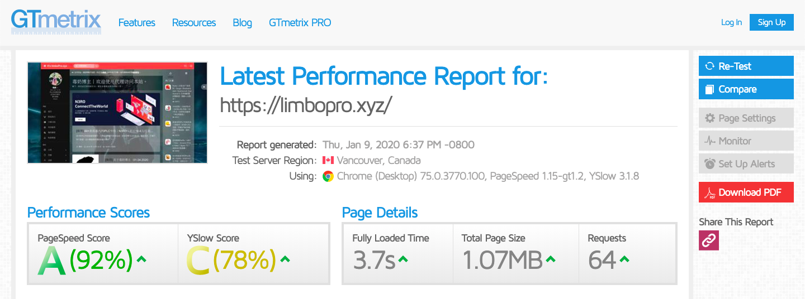
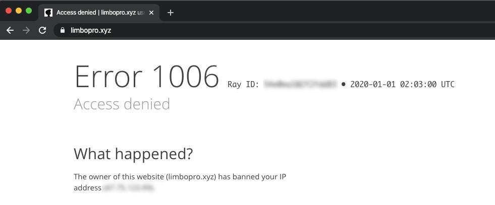
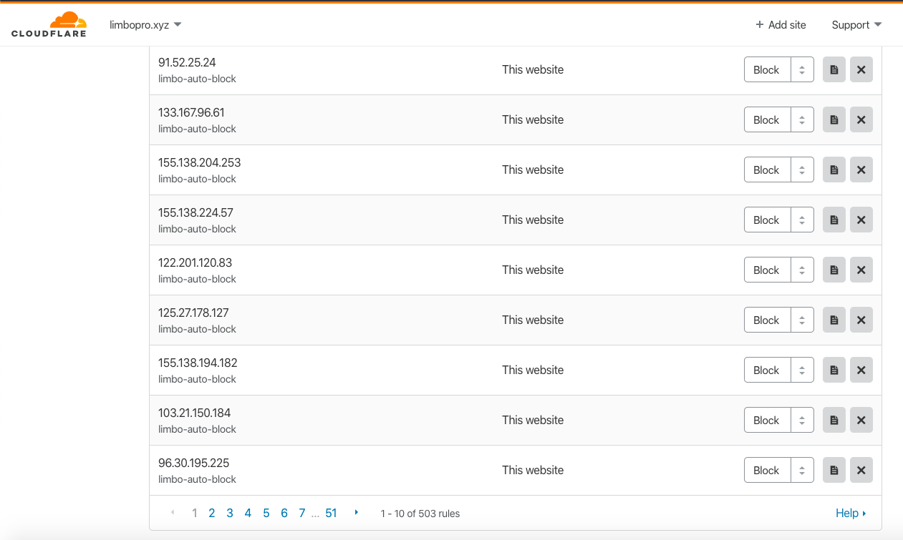
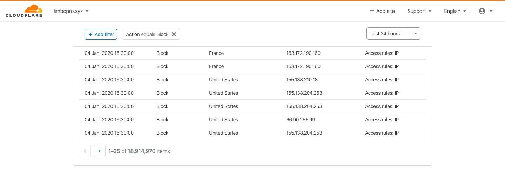
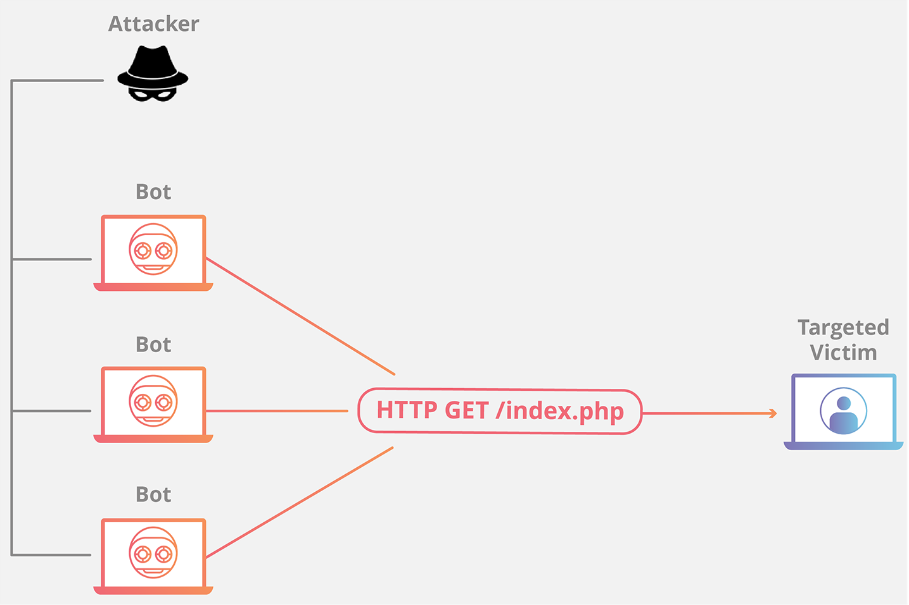
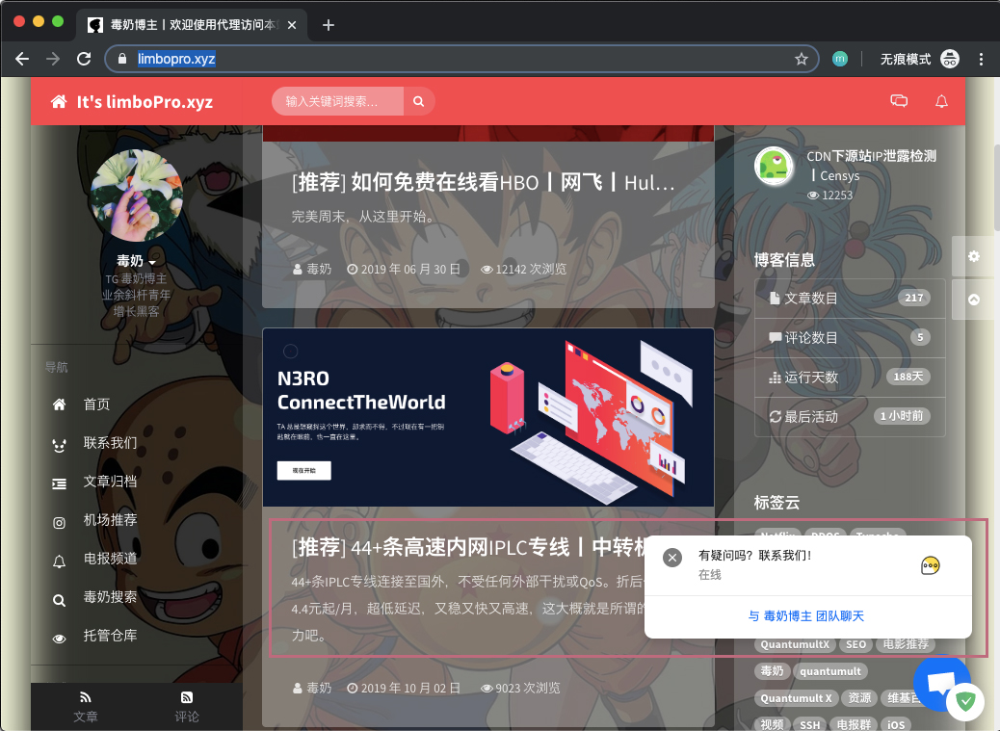
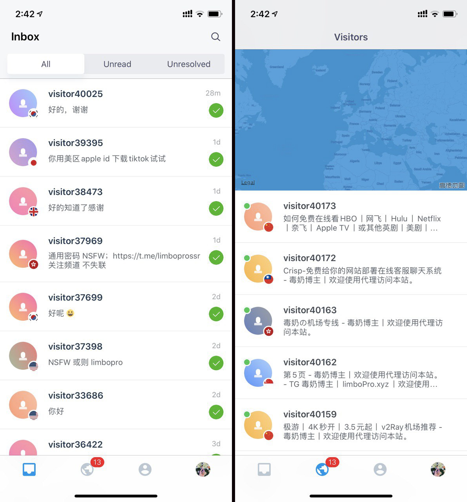
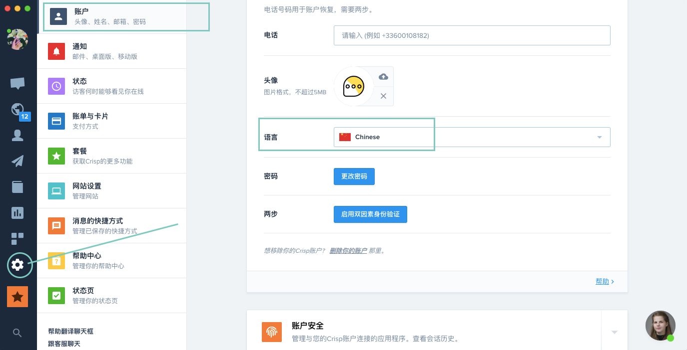
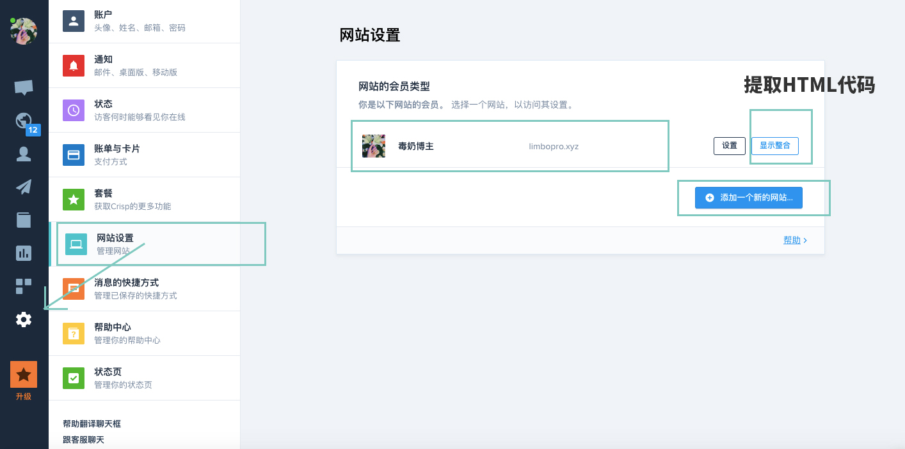

<?xml version="1.0" encoding="UTF-8"?>
<rss version="2.0"
xmlns:content="http://purl.org/rss/1.0/modules/content/"
xmlns:dc="http://purl.org/dc/elements/1.1/"
xmlns:slash="http://purl.org/rss/1.0/modules/slash/"
xmlns:atom="http://www.w3.org/2005/Atom"
xmlns:wfw="http://wellformedweb.org/CommentAPI/">
<channel>
<title>毒奶博主丨欢迎使用代理访问本站。 - 网站优化</title>
<link>https://limbopro.xyz/category/Typecho/</link>
<atom:link href="https://limbopro.xyz/feed/category/Typecho/" rel="self" type="application/rss+xml" />
<language>zh-CN</language>
<description></description>
<lastBuildDate>Thu, 09 Jan 2020 21:33:00 +0800</lastBuildDate>
<pubDate>Thu, 09 Jan 2020 21:33:00 +0800</pubDate>
<item>
<title>[DONE] 博客 Nginx 分支由 Tengine 迁移至 OpenResty</title>
<link>https://limbopro.xyz/archives/7167.html</link>
<guid>https://limbopro.xyz/archives/7167.html</guid>
<pubDate>Thu, 09 Jan 2020 21:33:00 +0800</pubDate>
<dc:creator>毒奶</dc:creator>
<description><![CDATA[主理人说via https://gtmetrix.com/reports/limbopro.xyz/KSre06ep迁移过程中给大家带来的困扰，博主在此表示抱歉。(一切为了性能与优化...Ope...]]></description>
<content:encoded xml:lang="zh-CN"><![CDATA[
<h2>主理人说</h2><p><br>via <a href="https://gtmetrix.com/reports/limbopro.xyz/KSre06ep">https://gtmetrix.com/reports/limbopro.xyz/KSre06ep</a></p><p>迁移过程中给大家带来的困扰，博主在此表示抱歉。(一切为了性能与优化...</p><h2>OpenResty®介绍</h2><p>OpenResty® 是一个基于 <a href="https://openresty.org/cn/nginx.html">Nginx</a> 与 Lua 的高性能 Web 平台，其内部集成了大量精良的 Lua 库、第三方模块以及大多数的依赖项。用于方便地搭建能够处理超高并发、扩展性极高的动态 Web 应用、Web 服务和动态网关。</p><p>OpenResty® 通过汇聚各种设计精良的 <a href="https://openresty.org/cn/nginx.html">Nginx</a> 模块（主要由 OpenResty 团队自主开发），从而将 <a href="https://openresty.org/cn/nginx.html">Nginx</a> 有效地变成一个强大的通用 Web 应用平台。这样，Web 开发人员和系统工程师可以使用 Lua 脚本语言调动 <a href="https://openresty.org/cn/nginx.html">Nginx</a> 支持的各种 C 以及 Lua 模块，快速构造出足以胜任 10K 乃至 1000K 以上单机并发连接的高性能 Web 应用系统。</p><p>OpenResty® 的目标是让你的Web服务直接跑在 <a href="https://openresty.org/cn/nginx.html">Nginx</a> 服务内部，充分利用 <a href="https://openresty.org/cn/nginx.html">Nginx</a> 的非阻塞 I/O 模型，不仅仅对 HTTP 客户端请求,甚至于对远程后端诸如 MySQL、PostgreSQL、Memcached 以及 Redis 等都进行一致的高性能响应。</p><p>参考 <a href="https://openresty.org/cn/components.html">组件</a> 可以知道 OpenResty® 中包含了多少软件。</p><p>参考 <a href="https://openresty.org/cn/getting-started.html">上路</a> 学习如何从最简单的 hello world 开始使用 OpenResty® 开发 HTTP 业务，或前往 <a href="https://openresty.org/cn/download.html">下载</a> 直接获取 OpenResty® 的源代码包开始体验。</p>
]]></content:encoded>
<slash:comments>0</slash:comments>
<comments>https://limbopro.xyz/archives/7167.html#comments</comments>
<wfw:commentRss>https://limbopro.xyz/feed/archives/7167.html</wfw:commentRss>
</item>
<item>
<title>Nmap丨暗黑互联网扫描器丨IPv4端口扫描</title>
<link>https://limbopro.xyz/archives/nmap.html</link>
<guid>https://limbopro.xyz/archives/nmap.html</guid>
<pubDate>Fri, 03 Jan 2020 14:03:00 +0800</pubDate>
<dc:creator>毒奶</dc:creator>
<description><![CDATA[本文隶属于 软件百科 分类，点击分类名称可以查看更多相关文章；主理人说为了安全，给你的网站套个CDN（例如 Cloudflare），将源站服务器隐藏在其后；CensysCensys 可以看成是前...]]></description>
<content:encoded xml:lang="zh-CN"><![CDATA[
<p><br>本文隶属于 <a href="../../../category/software-skills/index.html">软件百科</a> 分类，点击分类名称可以查看更多相关文章；</p><h2>主理人说</h2><p>为了安全，给你的网站套个CDN（例如 <a href="https://cloudflare.com/">Cloudflare</a>），将源站服务器隐藏在其后；</p><h2>Censys</h2><p></p><p><a href="https://censys.io/">Censys</a> 可以看成是前端集成（非实时），<strong>为用户提供数据索引支持</strong>；而它背后使用的工具正是自己开发的<strong><a href="https://zmap.io/">ZMap</a></strong>（比NMap快，号称一个小时扫描整个互联网IPv4地址；）我目前在用<a href="https://nmap.org/">Nmap</a>，慢却精。</p><p>不久前，<a href="https://censys.io/">Censys</a>域名查询结果提供了域名的排名信息（<strong>Alexa Rank</strong>）；</p><h3>用处及用法</h3><p><a href="https://censys.io/ipv4">Censys</a> 提供三种类型的查询：</p><table><thead><tr><th align="center">模式</th><th align="center">备注</th></tr></thead><tbody><tr><td align="center">IPv4 Hosts</td><td align="center">IP查询</td></tr><tr><td align="center">Websites</td><td align="center">域名查询</td></tr><tr><td align="center">Certificates</td><td align="center">证书查询</td></tr></tbody></table><p>*<a href="https://censys.io/ipv4">Censys</a> 是无时无刻不在扫描联网设备的；每次扫描都会记录到数据库以被后期索引取出分析；所以，用Censys可以查到域名下有多少子域名及其对应服务器IP（如果DNS解析时没有套CDN，则源站服务器有很大机会被发现并记录。所以，套CDN之前，务必确认源站IP是否已经被记录了，若被Censys记录则务必更换IP）</p><h2>ZMap</h2><p>译自英文-ZMap是一种免费的开放源代码安全扫描器，它是作为Nmap的更快替代品而开发的。ZMap专为信息安全研究而设计，可用于白帽子和黑帽子的目的。该工具能够<strong>发现漏洞及其影响</strong>，<strong>并检测受影响的物联网设备</strong>。ZMap使用每秒1 GB的网络带宽，<strong>可以在一个端口上一个小时内扫描整个IPv4地址空间</strong>。 维基百科（英文)</p><h3>ZMap安装</h3><table><thead><tr><th>OS</th><th> </th></tr></thead><tbody><tr><td>Debian and Ubuntu</td><td><code>sudo apt install zmap</code></td></tr><tr><td>Fedora, CentOS, and RHEL</td><td><code>sudo yum install zmap</code></td></tr><tr><td>Gentoo</td><td><code>sudo emerge zmap</code></td></tr><tr><td>macOS (using <a href="https://brew.sh/">Homebrew</a>)</td><td><code>brew install zmap</code></td></tr><tr><td>Arch Linux</td><td><code>sudo pacman -S zmap</code></td></tr></tbody></table><p><strong>Instructions on building ZMap from source</strong> can be found in <a href="https://github.com/zmap/zmap/blob/master/INSTALL.md">INSTALL</a>.</p><h3>Usage</h3><p>A guide to using ZMap is found in our <a href="https://github.com/zmap/zmap/wiki">GitHub Wiki</a>.</p><h2>NMap</h2><p>Nmap是一款用于网路发现和安全审计的网路安全工具，它是自由软体。软体名字Nmap是Network Mapper的简称。通常情况下，Nmap用于：检测目标主机是否在线、端口开放情况、侦测运行的服务类型及版本信息、侦测操作系统与设备类型等信息。 它是网络管理员必用的软件之一，用以评估网络系统安全。</p><p><strong>Nmap 是不少<a href="https://zh.wikipedia.org/wiki/">黑客</a>及<a href="https://zh.wikipedia.org/wiki/">脚本小子</a>爱用的工具</strong> 。<a href="https://zh.wikipedia.org/wiki/">系统管理员</a>可以利用Nmap来探测工作环境中未经批准使用的服务器，黑客通常会利用Nmap来搜集目标电脑的网络设定，从而计划攻击的方法。</p><p><strong>Nmap通常用在信息搜集阶段，用于搜集目标机主机的基本状态信息</strong>。扫描结果可以作为<a href="https://zh.wikipedia.org/w/index.php?title=">漏洞扫描</a>、<a href="https://zh.wikipedia.org/wiki/">漏洞利用</a>和<a href="https://zh.wikipedia.org/wiki/">权限提升</a>阶段的输入。例如，业界流行的漏洞扫描工具<a href="https://zh.wikipedia.org/wiki/Nessus">Nessus</a>与漏洞利用工具<a href="https://zh.wikipedia.org/wiki/Metasploit">Metasploit</a>都支持导入Nmap的<a href="https://zh.wikipedia.org/wiki/XML">XML</a>格式结果，而Metasploit框架内也集成了Nmap工具（支持Metasploit直接扫描）。</p><p><a href="https://zh.wikipedia.org/zh-tw/Nmap">维基百科</a></p><p><strong>Nmap 基本语法</strong></p><pre><code>nmap [ &lt;扫描类型&gt; ...] [ &lt;选项&gt; ] { &lt;扫描目标说明&gt; }</code></pre><p>全面进攻性扫描（包括各种主机发现、端口扫描、版本扫描、OS扫描及默认脚本扫描）</p><pre><code>nmap -A -v target_ip</code></pre><p>Ping扫描</p><pre><code>nmap -sn -v target_ip</code></pre><p>快速端口扫描</p><pre><code>nmap -F -v target_ip</code></pre><p>版本扫描</p><pre><code>nmap -sV -v target_ip </code></pre><p>操作系统扫描</p><pre><code>nmap -O -v target_ip</code></pre><p>*Nmap 常被跟评估系统漏洞软件Nessus混为一谈。Nmap 以隐秘的手法，避开闯入检测系统的监视，并尽可能不影响目标系统的日常操作。</p><h2>联系主理人</h2><p>1.关注频道 <a href="https://t.me/limboprossr">https://t.me/limboprossr</a> 不失联；<br>2.<code>毒奶粉</code>们（我管我的Fans）可联系 <a href="../../../usr/uploads/2019/10/3453243330.png">TG机器人</a> 或发送 <a href="../../../usr/uploads/2019/10/3453243330.png">邮件</a> 获取帮助；</p><p>3.或点击<code>本页面右下角</code>的聊天按钮联系；</p>
]]></content:encoded>
<slash:comments>0</slash:comments>
<comments>https://limbopro.xyz/archives/nmap.html#comments</comments>
<wfw:commentRss>https://limbopro.xyz/feed/archives/nmap.html</wfw:commentRss>
</item>
<item>
<title>使用脚本提高DDoS/CC 防御能力丨自动拉黑异常IP并提交至Cloudflare丨分钟级检查丨Cloudflare User-level Firewall Access Rule API</title>
<link>https://limbopro.xyz/archives/6949.html</link>
<guid>https://limbopro.xyz/archives/6949.html</guid>
<pubDate>Fri, 03 Jan 2020 09:52:00 +0800</pubDate>
<dc:creator>毒奶</dc:creator>
<description><![CDATA[本文隶属于 网站优化 分类，点击分类名称查看更多相关主题；[post cid="6719" cover="https://limbopro.xyz/usr/uploads/2019/12/173...]]></description>
<content:encoded xml:lang="zh-CN"><![CDATA[
<p></p><p>本文隶属于 <a href="../../../category/Typecho/index.html">网站优化</a> 分类，点击分类名称查看更多相关主题；<br>[post cid="6719" cover="https://limbopro.xyz/usr/uploads/2019/12/1736885170.png"/]</p><p>其他参考资料：<a href="../../../usr/uploads/2020/01/1714301628.pdf">DDoS_White_Paper_CN.pdf</a></p><h2>主理人说</h2><p>找这个<a href="https://api.cloudflare.com/#user-level-firewall-access-rule-list-access-rules">API</a>已经找了很久了（Cloudflare 的控制面板 <code>Firewall</code>模块下，Cloudflare似乎对它进行了刻意隐藏，后来在 <a href="https://api.cloudflare.com/#user-level-firewall-access-rule-create-access-rule">Cloudflare API 资料库</a>找到了详细API使用说明）；（for 循环提交异常IP的脚本，源自 <a href="https://www.9sep.org/cloudflare-batch-firewall-blacklist">9sep.org</a>博客，在此感谢脚本原作者；</p><p><strong>车有车牌，打电话得有电话号码，上网得有个IP地址</strong>；<a href="https://zh.wikipedia.org/zh-cn/IP%E5%9C%B0%E5%9D%80">IP地址</a>主要有两个功能：标识主机或者网络和寻址。SO？不管是物联网设备也好还是被劫持的肉鸡，归根结底都是一个个在线的IP；所谓DDoS攻击？大概就是不计其数的IP对目标IP发起恶意请求，大白话就是无数的骚扰电话，呼死你；</p><p>1.<a href="https://www.cloudflare.com/zh-cn/learning/ddos/what-is-a-ddos-attack/">DDoS是什么</a>？Cloudflare 官方说明；<br>2.如何缓解/清洗/防御DDoS/CC攻击的方法？禁止异常IP与服务器取得联络（不对异常IP提供服务）；<br>3.无请求便无性能损耗；</p><p><strong>本教程及其脚本并非一劳永逸，但能在遭受攻击后，快速且有效地缓解异常请求对服务器的性能损耗</strong>；通过对nginx日志进行分析，提取异常IP（短时间内该IP的请求次数超过阈值）并提交至Cloudflare的防火墙（Firewall rules），即，将DDoS/CC攻击IP/代理封锁在Cloudflare CDN前端；除非攻击者有<strong>无限的代理IP</strong>，否则攻击将会在短时间（看你设置的脚本执行周期以及触发封禁IP的请求阈值）内被清洗干净。DDoS/CC防御 100%？我觉得还行（如果你用其他CDN，亦可参考本文；同理）。</p><h2>第一步 安装模块</h2><p>[post cid="1481" cover="https://limbopro.xyz/usr/uploads/2019/12/2913761642.jpg"/]<br><strong>Cloudflare 下 Nginx 获取用户真实IP 地址</strong></p><p>当您的网站流量路由经过 Cloudflare 时，我们充当反向代理。 这允许 Cloudflare 通过更有 效地路由数据包并缓存静态资源（图片、JavaScript、CSS 等）来加快页面加载时间。因此， 在响应请求并记录请求时，您的源 Web 服务器默认情况下会看到 Cloudflare IP 地址。</p><p>Cloudflare 会在名为 CF-Connecting-IP 的附加 HTTP 标头中添加实际的访问者 IP 地址。但是，如果您有其他依赖于真实访问者的IP 地址的应用程序，则可能会出现某些问题。</p><h2>第二步 制作IP黑名单</h2><p><strong>禁止ip频繁访问及自动拉黑名单，防CC/DDoS攻击的一般性方法</strong><br>以前我们对异常请求的IP进行封禁，即从nginx输出层面，返回<a href="https://zh.wikipedia.org/zh-hans/HTTP_403">403状态码</a>，以减轻服务器压力；现在我们直接把收集到的异常IP，通过脚本自动提交至 Cloudflare 防火墙以实现从CDN前端进行封禁处理，自此该IP任何请求将不会到达源站服务器；</p><p>*注：短时间内IP发出大量请求，简单判定为异常，并将该IP加入黑名单即可；</p><p><strong>拉黑IP教程概要</strong><br>拉取/提取临时日志，分析临时日志，判定异常，生成异常IP列表，提交异常IP至<a href="http://cloudflare.com/">Cloudflare</a>；</p><p><strong>第一步，拉取一定时间范围内的请求日志</strong><br>这一步你只需填写<code>原始日志</code>的正确位置，以及<code>临时日志</code>的存放位置即可；</p><pre><code>&gt; /home/f5.log; #每次拉取临时日志时清除上一次拉取的遗留下来的临时日志
## 拉取临时日志 
function define()
{
    ori_log_path=&quot;/home/wwwlogs/limbopro.xyz/access.log&quot; #原始日志
    tmp_log_path=&quot;/home/f5.log&quot; #拉取临时日志存放的位置
    date_stamp=`date -d &quot;-2min&quot; +%Y:%H:%M:%S` #从原始日志处读取最近2分钟的日志记录并存储至临时日志处存放，这个2可以改为任意数字但不应该超过日志记录的起止期限
    day_stamp=`date +%d`
}

function gather()
{
    awk -F '[/ &quot;\[]' -vnstamp=&quot;$date_stamp&quot; -vdstamp=&quot;$day_stamp&quot; '$7&gt;=nstamp &amp;&amp; $5==dstamp' ${ori_log_path} &gt; ${tmp_log_path}; #拉取日志
    log_num=`cat ${tmp_log_path} | wc -l`; #计算请求次数
    request_time=`awk '{print $(NF-1)}' ${tmp_log_path} | awk '{sum+=$1}END{print sum}'`; #请求时间
    ave_request_time=`echo | awk &quot;{print ${request_time}/${log_num}}&quot; `; #平均请求时间
    ipcounts=$(awk '{print $1}' ${tmp_log_path} | sort -n | uniq | wc -l); #统计IP个数
    date=$(env LANG=en_US.UTF-8 date &quot;+%e/%b/%Y/%R&quot;)
}

function output()
{
date=$(env LANG=en_US.UTF-8 date &quot;+%e/%b/%Y/%R&quot;)
}

function main()
{
    define
    gather
    output
}

main</code></pre><p>从原始日志处<code>/home/wwwlogs/limbopro.xyz/access.log</code>(以实际为准)拉取临时日志，并存放在<code>/home/f5.log</code>（你可自定义），然后对该临时日志进行分析；</p><p><strong>第二步，判定异常并制作黑名单</strong><br>这一步你只需定义<code>黑名单</code>存放位置（务必使用<code>.conf</code>后缀），以及单独拎出IP列表即下方的<code>/home/cf.conf</code>；</p><pre><code>##第三步 拉黑名单
date=$(env LANG=en_US.UTF-8 date &quot;+%e/%b/%Y/%R&quot;)
blockip=/home/f5.conf #nginx封禁配置
cfblockip=/home/cf.conf #定义IP黑名单集合留作给CF用
access=/home/f5.log #读取临时日志
for ip in $(awk '{cnt[$1]++;}END{for(i in cnt){printf(&quot;%s\t%s\n&quot;, cnt[i], i);}}' ${access} | awk '{if($1&gt;40) print $2}') 
##请求次数超过40次即封禁 {if($1&gt;40)
do 
echo &quot;deny ${ip};&quot; &gt;&gt; $blockip
echo &quot;${ip}&quot; &gt;&gt; $cfblockip
done

lnmp nginx reload;</code></pre><p><strong>第三步，配置 nginx.conf 使之生效 </strong> （按理说，有了第四步，第三步或可不要）</p><pre><code>...
server
{
listen 443 ssl http2;
server_name limbopro.xyz ;

include /home/whitelist.conf;
include /home/f5.conf; #频繁刷新第一次
...
}</code></pre><p>配置 nginx.conf，添加 <code>/home/f5.conf</code> 至 nginx.conf 配置文件，重启nginx即可生效；异常请求IP再次对网站发起请求时将会获得403状态码；</p><p><strong>第四步，提交黑名单至 Cloudflare </strong></p><p><br>via Cloudflare CDN 工作原理示意图；</p><p>就算在nginx这里就返回了403状态码，但异常请求仍会对服务器性能造成损耗，所以我们只能从 Cloudflare 防火墙层面对异常请求进行封堵即可（参考Cloudflare CDN 工作原理示意图可见一二）；</p><p></p><pre><code>#!/bin/bash
# Author: Zhys
# Date  : 2018
# blog : https://www.9sep.org/
CFEMAIL=&quot;Cloudflare 邮箱账号&quot; 
CFAPIKEY=&quot;Cloudflare APIKEY&quot; #Cloudflare 控制面板-页面右上角-My Profile-API Tokens-API Keys-Global API Key 可以找到；
ZONESID=&quot;Cloudflare ZONE ID&quot; #Cloudflare 控制面板-Overview 模块- 右侧栏 - API-ZONE ID可以找到
IPADDR=$(&lt;/home/cf.conf) #
for IPADDR in ${IPADDR[@]}; do
echo $IPADDR
curl -s -X POST &quot;https://api.cloudflare.com/client/v4/zones/$ZONESID/firewall/access_rules/rules&quot; \
  -H &quot;X-Auth-Email: $CFEMAIL&quot; \
  -H &quot;X-Auth-Key: $CFAPIKEY&quot; \
  -H &quot;Content-Type: application/json&quot; \
  --data '{&quot;mode&quot;:&quot;block&quot;,&quot;configuration&quot;:{&quot;target&quot;:&quot;ip&quot;,&quot;value&quot;:&quot;'$IPADDR'&quot;},&quot;notes&quot;:&quot;limbo-auto-block&quot;}'
done</code></pre><p>cf 自封禁完全脚本来自 <a href="https://www.9sep.org/cloudflare-batch-firewall-blacklist">9sep.org</a>，另，我 for 循环不大会写，虽然看得懂；<br>大家可以把这三步做成一个脚本，使用 <a href="https://www.runoob.com/linux/linux-comm-crontab.html">Crontab</a> 命令自动执行即可。</p><p>以上。</p><h2>效果展示</h2><p></p><p></p><p></p><p></p><p>via <a href="https://t.me/limboprossr/1220">https://t.me/limboprossr/1220</a></p><h2>IP Access Rules 的说明</h2><p>可登入<a href="https://dash.cloudflare.com/">Cloudflare</a>-Firewall-Tools 模块下查看；</p><pre><code>IP Access Rules can be based on IP address, IP address range, Autonomous System Number (ASN) or country.</code></pre><p>即可基于 <code>IP地址</code>/<code>IP段</code>/<a href="https://zh.wikipedia.org/zh-hans/%E8%87%AA%E6%B2%BB%E7%B3%BB%E7%BB%9F">自治系统号</a>/<code>国家</code>，进行相应操作，例如：</p><pre><code>What option should I choose?
Block: Ensures that an IP address will never be allowed to access your website
Challenge: Specified IP addresses will be shown a CAPTCHA before being allowed to access your website
JavaScript Challenge: The JavaScript challenge page requires the visitor to wait 5 seconds while Cloudflare determines if the visitor is coming from a real browser. The challenge requires the visitor's browser to answer a math problem which takes a bit of time to compute. Once successfully answered, the browser will be remembered and won't be challenged again.
Whitelist: Ensures that an IP address will never be blocked from accessing your website. The IP may still be mitigated if part of a DDoS attack. Only use for verified IPs that you trust!
What can IP Access Rules be applied to?
IP Access Rules can be applied based on:

IP address
IP address range: Cloudflare accepts the following CIDR notations: /16 and /24 for IPv4 addresses and /64, /48, and /32 for IPv6
Autonomous System Number (ASN): An ASN is the unique identifier for any network, such as the Cloudflare network (AS13335). The accepted format for ASN's is &quot;AS12345&quot;
Country: Specified using ISO 2-letter country codes, such as &quot;US&quot; for the United States
You can apply IP Access Rules to this domain only or all domains in your account.

To modify an existing Access Rule, create a new Access Rule and delete the existing one.</code></pre><p>Block（黑名单）/Challenge（验证码）/JavaScript Challenge(五秒盾)/Whitelist（白名单），按理说如果你是非 Cloudflare 付费用户，你只能一个一个Rule（规则）的添加，这个时候API就显得特别重要（无数量限制，且可制作脚本并利用 Crontab <br>自动执行实时相应操作）；</p><h2>Cloudflare API</h2><p><a href="https://api.cloudflare.com/#user-level-firewall-access-rule-properties">https://api.cloudflare.com/#user-level-firewall-access-rule-properties</a> <br>*这个API可以用作提交指定IP至<code>IP Access Rules</code>里面（或可登入<a href="https://dash.cloudflare.com/">Cloudflare</a>-Firewall-Tools-可以进行一个一个添加），批量的，可以进行脚本化，自动化（利用 <a href="http://www.runoob.com/linux/linux-comm-crontab.html">Crontab</a> 命令定时执行脚本）；</p><p><strong>Cloudflare API 档案库</strong>：<a href="https://api.cloudflare.com/">https://api.cloudflare.com/</a> ，例如利用脚本<a href="https://api.cloudflare.com/#user-level-firewall-access-rule-list-access-rules">自动切换防御模式</a>，<a href="https://api.cloudflare.com/#zone-purge-all-files">清除或开启缓存</a>，增加或修改<a href="https://api.cloudflare.com/#page-rules-for-a-zone-update-page-rule">PageRules</a>等等；</p><h2>cURL 命令</h2><p>curl命令是一个利用URL规则在命令行下工作的文件传输工具。 它支持文件的上传和下载。 curl支持包括<code>HTTP</code>、<code>HTTPS</code>、<code>ftp</code>等众多协议，还支持<code>POST</code>、<code>cookies</code>、<code>认证</code>、从指定偏移处下载部分文件、用户代理字符串、限速、文件大小、进度条等特征。</p><p>via <a href="https://blog.csdn.net/u012340794/article/details/71440604">CSDN</a></p><p>[post cid="6538" cover="https://limbopro.xyz/usr/uploads/2019/12/2912835083.jpg"/]</p><h2>cURL 方法</h2><p>使用 cURL 命令调用Cloudflare User-level Firewall Access Rule API的方法（官方举例）：</p><pre><code>curl -X POST &quot;https://api.cloudflare.com/client/v4/user/firewall/access_rules/rules&quot; \
     -H &quot;X-Auth-Email: user@example.com&quot; \
     -H &quot;X-Auth-Key: c2547eb745079dac9320b638f5e225cf483cc5cfdda41&quot; \
     -H &quot;Content-Type: application/json&quot; \
     --data '{&quot;mode&quot;:&quot;challenge&quot;,&quot;configuration&quot;:{&quot;target&quot;:&quot;ip&quot;,&quot;value&quot;:&quot;198.51.100.4&quot;},&quot;notes&quot;:&quot;This rule is on because of an event that occured on date X&quot;}'</code></pre><p>Cloudflare 服务器返回成功状态（官方举例）</p><pre><code>{
  &quot;success&quot;: true,
  &quot;errors&quot;: [],
  &quot;messages&quot;: [],
  &quot;result&quot;: {
    &quot;id&quot;: &quot;92f17202ed8bd63d69a66b86a49a8f6b&quot;,
    &quot;notes&quot;: &quot;This rule is on because of an event that occured on date X&quot;,
    &quot;allowed_modes&quot;: [
      &quot;whitelist&quot;,
      &quot;block&quot;,
      &quot;challenge&quot;,
      &quot;js_challenge&quot;
    ],
    &quot;mode&quot;: &quot;challenge&quot;,
    &quot;configuration&quot;: {
      &quot;target&quot;: &quot;ip&quot;,
      &quot;value&quot;: &quot;198.51.100.4&quot;
    },
    &quot;created_on&quot;: &quot;2014-01-01T05:20:00.12345Z&quot;,
    &quot;modified_on&quot;: &quot;2014-01-01T05:20:00.12345Z&quot;,
    &quot;scope&quot;: {
      &quot;id&quot;: &quot;7c5dae5552338874e5053f2534d2767a&quot;,
      &quot;email&quot;: &quot;user@example.com&quot;,
      &quot;type&quot;: &quot;user&quot;
    }
  }
}</code></pre><h2>联系主理人</h2><p>1.关注频道 <a href="https://t.me/limboprossr">https://t.me/limboprossr</a> 不失联；<br>2.<code>毒奶粉</code>们（我管我的Fans）可联系 <a href="../../../usr/uploads/2019/10/3453243330.png">TG机器人</a> 或发送 <a href="../../../usr/uploads/2019/10/3453243330.png">邮件</a> 获取帮助；</p><p>3.或点击<code>本页面右下角</code>的聊天按钮联系；</p>
]]></content:encoded>
<slash:comments>0</slash:comments>
<comments>https://limbopro.xyz/archives/6949.html#comments</comments>
<wfw:commentRss>https://limbopro.xyz/feed/archives/6949.html</wfw:commentRss>
</item>
<item>
<title>TpCache-Typecho 缓存插件（配合Redis食用，800+并发支撑）</title>
<link>https://limbopro.xyz/archives/TpCache.html</link>
<guid>https://limbopro.xyz/archives/TpCache.html</guid>
<pubDate>Sun, 29 Dec 2019 21:51:00 +0800</pubDate>
<dc:creator>毒奶</dc:creator>
<description><![CDATA[本文隶属于 网站优化 分类，点击分类名称查看更多相关主题；主理人说使用了TpCache+Redis组合以后，小伙伴纷纷反馈打开快到飞起。(你打开谷歌首页有多快，就有多快。TpCache项目地址：...]]></description>
<content:encoded xml:lang="zh-CN"><![CDATA[
<p><br>本文隶属于 <a href="../../../category/Typecho/index.html">网站优化</a> 分类，点击分类名称查看更多相关主题；</p><h1>主理人说</h1><p>使用了TpCache+Redis组合以后，小伙伴纷纷反馈打开快到飞起。(你打开谷歌首页有多快，就有多快。</p><h2>TpCache</h2><p>项目地址：<a href="https://github.com/phpgao/TpCache">https://github.com/phpgao/TpCache</a></p><h2>功能</h2><p>减缓网站并发压力而开发的缓存插件。</p><h2>注意</h2><p>1.支持Memcache，Redis，Mysql三种驱动。<br>2.非js方式的访问统计插件会失效。</p><h2>下载并启用TpCache插件</h2><p></p><p>1.进入<a href="https://github.com/phpgao/TpCache">TpCache</a>的Github仓库，<br>2.使用SSH登入服务器使用wget命令进行下载：</p><pre><code>$ wget https://github.com/phpgao/TpCache/archive/master.zip</code></pre><p>3.放入网站根目录/usr/plugins/文件夹下；<br>4.解压压缩包，将文件夹重命名为TpCache；<br>5.进入网站-控制台-插件-找到TpCache启用；</p><p>*如未安装<code>Memcache</code>，<code>Redis</code>PHP扩展，可以使用MySQL驱动；</p><p>6.设置好后，可以强制刷新下首页试试看效果；</p><p>以上，如不想折腾redis则可到此结束，Enjoy。</p><h2>安装redis</h2><p><strong>配合Redis食用，TpCache的性能应该是最佳的</strong>；<br>博主的生产环境是Ubuntu server，按理说下面命令亦适合Redhat、SuSE、Debian、Centos等；</p><p><strong>源码编译安装Redis</strong></p><p>1.进入 Redis 官网：<a href="https://redis.io/">https://redis.io/</a><br>2.找到最新 latest Stable version；<br>3.目前是 5.0.7 <a href="http://download.redis.io/releases/redis-5.0.7.tar.gz">http://download.redis.io/releases/redis-5.0.7.tar.gz</a> ；</p><pre><code>$ cd /usr/src/ 
$ wget http://download.redis.io/releases/redis-5.0.7.tar.gz ##下载Redis最新稳定版
$ tar -zxvf redis-5.0.7.tar.gz ##解压
$ cd redis-5.0.7 
$ make &amp;&amp; make install ##编译与安装</code></pre><p>安装服务</p><pre><code>$ cd /usr/src/redis-5.0.7/utils/
$ ./install_server.sh</code></pre><p>默认配置</p><pre><code>Port           : 6379
Config file    : /etc/redis/6379.conf #配置文件
Log file       : /var/log/redis_6379.log #日志
Data dir       : /var/lib/redis/6379 #生产目录
Executable     : /usr/local/bin/redis-server #redis-serve 文件
Cli Executable : /usr/local/bin/redis-cli #redis-cli文件</code></pre><p>至此，Redis安装完毕，得到两个二进制文件；</p><p><strong>1.redis-server</strong><br><strong>2.redis-cli</strong></p><p>安装成功之后<strong>可以通过以下命令查看redis的安装位置</strong>：（如果你忘记的话）</p><pre><code>$ which redis-server
$ which redis-cli</code></pre><p><strong>编辑redis conf</strong></p><pre><code>$ vi /etc/redis/6379.conf #redis的配置文件</code></pre><pre><code># By default Redis does not run as a daemon. Use 'yes' if you need it.
# Note that Redis will write a pid file in /var/run/redis.pid when daemonized.
daemonize no</code></pre><p>建议将<code>no</code>改为<code>yes</code>，表示改为后台启动（run as a daemon）；如需修改端口找到：</p><pre><code># Accept connections on the specified port, default is 6379 (IANA #815344).
# If port 0 is specified Redis will not listen on a TCP socket.
port 6379 #修改端口即可</code></pre><p><strong>查看redis版本</strong></p><pre><code>$ redis-cli info | grep &quot;redis_version&quot;</code></pre><p><strong>启动redis</strong></p><pre><code>/usr/local/bin/redis-server /etc/redis/6379.conf</code></pre><p><strong>获取使用帮助</strong></p><pre><code>/usr/local/bin/redis-server -h #查看帮助</code></pre><p><strong>常用指令</strong></p><pre><code>Usage: 
./redis-server [/path/to/redis.conf] [options]
./redis-server - (read config from stdin)
./redis-server -v or --version
./redis-server -h or --help
./redis-server --test-memory &lt;megabytes&gt;

Examples:
./redis-server (run the server with default conf)
./redis-server /etc/redis/6379.conf
./redis-server --port 7777
./redis-server --port 7777 --replicaof 127.0.0.1 8888
./redis-server /etc/myredis.conf --loglevel verbose

Sentinel mode:
./redis-server /etc/sentinel.conf --sentine</code></pre><p><strong>查看redis服务是否启动</strong></p><pre><code>$ redis-cli
127.0.0.1:6379&gt; ping #输入ping
pong #反馈结果为pong则连接成功，服务正常；</code></pre><p><strong>测试redis性能</strong></p><pre><code>$ redis-benchmark -q -n 100000 #10w请求，带参数测试
PING_INLINE: 51255.77 requests per second
PING_BULK: 35803.80 requests per second
...
$ redis-benchmark #不带参数测试
====== GET ======
100000 requests completed in 2.19 seconds
50 parallel clients
3 bytes payload
keep alive: 1
...</code></pre><p>以上。</p><h2>安装 PHP redis扩展</h2><p>1.<a href="http://pecl.php.net/package/redis">http://pecl.php.net/package/redis</a>，安装所需版本（例如：redis-5.1.1.tgz ）</p><pre><code>$ cd /usr/src
$ wget http://pecl.php.net/get/redis-5.1.1.tgz
$ tar -zxvf redis-5.1.1.tgz
$ cd redis-5.1.1
$ /usr/local/php/bin/phpize #生成configure配置文件
$ ./configure --with-php-config=/usr/local/php/bin/php-config
$ make &amp;&amp; make install
$ find / -name &quot;php.ini&quot;
/usr/local/php/etc/php.ini
$ vi /usr/local/php/etc/php.ini
extension=redis.so #添加此配置
lnmp restart #重启服务 nginx</code></pre><h2>为TpCache配置redis驱动</h2><p>1.驱动选择redis驱动<br>2.选择你设置的端口；<br>3.保存；</p><h2>总结</h2><p><strong>两个必要，一个配置：</strong><br>1.源码安装redis，并启用redis 服务（确认端口能连接）；<br>2.安装PHP redis扩展 并启用；<br>3.插件配置，确保端口正确；</p><p>以上。</p><h2>效用</h2><p></p><p>来自 <a href="https://developers.google.com/speed/pagespeed/insights/?hl=zh-cn&url=limbopro.xyz&tab=desktop">Pagespeed</a>的得分，突飞猛进；</p><h2>联系主理人</h2><p>1.关注频道 <a href="https://t.me/limboprossr">https://t.me/limboprossr</a> 不失联；<br>2.<code>毒奶粉</code>们（我管我的Fans）可联系 <a href="../../../usr/uploads/2019/10/3453243330.png">TG机器人</a> 或发送 <a href="../../../usr/uploads/2019/10/3453243330.png">邮件</a> 获取帮助；</p><p>3.或点击<code>本页面右下角</code>的聊天按钮联系；</p>
]]></content:encoded>
<slash:comments>0</slash:comments>
<comments>https://limbopro.xyz/archives/TpCache.html#comments</comments>
<wfw:commentRss>https://limbopro.xyz/feed/archives/TpCache.html</wfw:commentRss>
</item>
<item>
<title>3个方法秒解各种DDoS丨 终极防御教程（可快速部署且免费）</title>
<link>https://limbopro.xyz/archives/DDoS.html</link>
<guid>https://limbopro.xyz/archives/DDoS.html</guid>
<pubDate>Sat, 28 Dec 2019 23:52:00 +0800</pubDate>
<dc:creator>毒奶</dc:creator>
<description><![CDATA[本文隶属于 网站优化 分类，点击分类名称查看更多相关主题；[post cid="6949" cover="https://limbopro.xyz/usr/uploads/2019/12/237...]]></description>
<content:encoded xml:lang="zh-CN"><![CDATA[
<p></p><p>本文隶属于 <a href="../../../category/Typecho/index.html">网站优化</a> 分类，点击分类名称查看更多相关主题；</p><p>[post cid="6949" cover="https://limbopro.xyz/usr/uploads/2019/12/2377344071.jpg"/]</p><h2>主理人序</h2><p></p><p>DDoS防御还是要做的，兴许哪天就挨打了呢。(另，这篇文章不是完全教程，总结均由实践得出，内容比较白话，教大家知其然知其所以然，排除加钱上高防IP以及扩容的可能性；1.<strong>Cloudflare CDN</strong>（免费套餐足矣），2.MySQL/PHP+Redis 缓存（开源），3.全站静态化（每日备份），秒解狂暴DDoS攻击，且不会花费任何费用，几乎免费；</p><p>另外，新增使用 Cloudflare 百分百抗DDoS教程：<a href="../../../archives/6949.html">自动提交异常IP至Cloudflare，以实现CDN前端封锁DDoS攻击</a>；（01.05.2020）</p><h2>本文概要</h2><p>0.网站为什么会被DDoS<br>1.DDoS为何物<br>2.LNMP（Web后端<br>3.静态网页/动态网页（用户所见所得<br>4.HTTP 请求方法（浏览器如何与服务器联络<br>5.User-Agent（浏览器身份<br>6.502 Bad Gateway（服务器状态反馈代码<br>7.如何应对DDoS（思路</p><h2>为什么会被DDoS</h2><p><strong>原因大概分为四种</strong></p><p>1.小朋友玩过家家<br>2.个人情感宣泄<br>3.名<br>4.利</p><p><strong>个人网站</strong>被打的原因一般是因为前两种，<br><strong>主动攻击</strong>声名远扬[某些领域]的网站一般是因为名，<br><strong>雇人攻击</strong>的一般是因为利，<br>正常情况下，小网站是不会有人碰的，<br>这句话不是瞎说。</p><p><strong>一些具有实践意义的建议</strong><br>高调做人，低调做事</p><h2>DDoS是什么</h2><p>DDoS攻击，又称为分布式拒绝服务 (DDoS) ；攻击是通过大规模 Internet 流量淹没目标服务器或其周边基础设施以破坏目标服务器、服务或网络正常流量的恶意行为。DDoS 攻击利用多台受损计算机系统作为攻击流量来源以达到攻击效果。利用的机器可以包括计算机，也可以包括其他联网资源（如 IoT 设备）。总体而言，DDoS 攻击好比高速公路发生交通堵塞，妨碍常规车辆抵达预定目的地。</p><p><strong>常见的 DDoS 攻击有哪几类？</strong></p><p><strong>不同的 DDoS 攻击手段针对不同的网络连接组件</strong>。为了解不同 DDoS 攻击的工作原理，必需掌握建立网络连接的方式。Internet 网络连接由许多不同的组件或“层”构成。就像打地基盖房子一样，模型中的每一步都有不同的目的。OSI 模型（如下图所示）是一个概念框架，用于描述 7 个不同层级的网络连接。</p><p></p><p>虽然几乎所有 DDoS 攻击都涉及<strong>用流量淹没目标设备或网络</strong>，但攻击可以<strong>分为三类</strong>。攻击者可能利用一种或多种不同的攻击手段，也可能根据目标采取的防范措施循环使用多种攻击手段。</p><p><strong>应用程序层攻击</strong><br></p><p>攻击目标：<strong>有时称为第 7 层 DDoS 攻击</strong>（参考 OSI 模型第 7 层），此类攻击的目标是耗尽目标资源。攻击目标是生成网页并传输网页响应 HTTP 请求的服务器层。 在客户端执行一项 HTTP 请求费用很低，但目标服务器做出响应却可能比较昂贵，因为服务器通常必须加载多个文件并运行数据库查询才能创建网页。第 7 层攻击很难防御，因为很难确定流量是否存在恶意。</p><p><strong>协议攻击</strong><br></p><p>攻击目标：协议攻击（也称为状态表耗尽攻击）旨在耗尽 Web 应用程序服务器或中间资源（如防火墙和负载均衡器）的可用状态表容量，进而导致服务中断。协议攻击利用协议堆栈第 3 层和第 4 层的弱点致使目标无法访问。</p><p><strong>容量耗尽攻击</strong><br></p><p>攻击目标：此类攻击尝试耗尽目标和大型 Internet 之间的可用带宽，从而造成拥塞。运用某种放大攻击或其他生成大量流量的手段（如僵尸网络请求），向目标发送大量数据。</p><p>via <a href="https://www.cloudflare.com/zh-cn/learning/ddos/what-is-a-ddos-attack/">什么是 DDoS 攻击？深入探索 DDoS 的工作原理及其阻止方法。</a> （Cloudflare 资料库）；</p><h2>LA/NMP</h2><p>知其然，知其所以然；世界上大部分网站都是运行在LNMP之上的，包括但不限于淘宝，百度等；说到建站，敢问谁不爱这四件套？软体开源，社区良好；</p><p><strong>LA/NMP</strong>是指一组通常一起使用来运行动态网站或者服务器的<a href="https://zh.wikipedia.org/wiki/">自由软件</a>名称首字母缩写。</p><p><strong>Linux</strong>，操作系统<br><strong>Apache</strong>/<strong>Nginx</strong>，网页服务器<br><strong>MariaDB</strong>或<strong>MySQL</strong>，数据库管理系统（或者数据库服务器）<br><strong>PHP</strong>、Perl或Python，脚本语言</p><h3>Linux</h3><p>这里是只允许在服务器上的Linux系统；Linux（聆听i/ˈlɪnəks/ LIN-əks）是一种自由和开放源码的类UNIX操作系统。该操作系统的内核由林纳斯·托瓦兹在1991年10月5日首次发布<a href="https://www.oracle.com/technetwork/cn/database/mysql/index.html">5</a>，在加上用户空间的应用程序之后，成为Linux操作系统。Linux也是自由软件和开放源代码软件发展中最著名的例子。只要遵循GNU 通用公共许可证（GPL），任何个人和机构都可以自由地使用Linux的所有底层源代码，也可以自由地修改和再发布。</p><p>via <a href="https://zh.wikipedia.org/wiki/Linux">维基百科</a></p><h3>Nginx</h3><p><a href="https://www.nginx.com/">Nginx</a>：Nginx**（发音同“engine X”）是异步框架的<a href="https://zh.wikipedia.org/wiki/">网页伺服器</a>，也可以用作<a href="https://zh.wikipedia.org/wiki/">反向代理</a>、<a href="https://zh.wikipedia.org/wiki/">负载平衡器</a>和<a href="https://zh.wikipedia.org/wiki/HTTP">HTTP缓存</a>。</p><p><a href="http://tengine.taobao.org/index_cn.html">Tengine</a>是由淘宝网发起的Web服务器项目。它在Nginx的基础上，针对大访问量网站的需求，添加了很多高级功能和特性。Tengine的性能和稳定性已经在大型的网站如淘宝网，天猫商城等得到了很好的检验。它的最终目标是打造一个高效、稳定、安全、易用的Web平台。</p><pre><code>Tengine version: Tengine/2.3.2
nginx version: nginx/1.17.3</code></pre><p>以上，我目前安装的版本（可以在安装Nginx的基础上装Tengine的，使用一些新特性；</p><h3>MySQL</h3><p>MySQL 是全球最受欢迎的开源数据库，支持经济高效地交付可靠、高性能和可扩展的基于 Web 的和嵌入式数据库应用。它是一个集成、事务安全、符合 ACID 的数据库，具备全面的提交、回滚、崩溃恢复和行级锁定功能。MySQL 不仅简便易用、易于扩展、性能卓越，而且还提供了一整套数据库驱动程序和可视化工具，可帮助开发人员和 DBA 自主构建和管理业务关键型 MySQL 应用。</p><p>via <a href="https://www.oracle.com/technetwork/cn/database/mysql/index.html">MySQL</a></p><h3>伺服器</h3><p>服务器通常以网络作为媒介，既可以通过局域网对内提供服务，也可以通过广域网对外提供服务。伺服器的最大特点就是其强大的运算能力，即使是一部简单的伺服器系统，通常也至少也要有两颗处理器以构成对称多处理架构，使其能在短时间内完成大量工作，并为大量用户提供服务。</p><p>via <a href="https://zh.wikipedia.org/zh-hans/%E6%9C%8D%E5%8A%A1%E5%99%A8#%E6%9C%8D%E5%8A%A1%E5%99%A8%EF%BC%88%E7%A1%AC%E4%BB%B6%EF%BC%89">维基百科</a></p><h2>502 Bad Gateway</h2><p><code>**502**</code><strong><code> Bad Gateway</code></strong> 是一种HTTP协议的服务器端错误状态代码，它表示作为网关或代理角色的服务器，从上游服务器（如tomcat、php-fpm）中接收到的响应是无效的。</p><p><a href="https://zh.wikipedia.org/wiki/Gateway_(telecommunications">Gateway</a> （网关）在计算机网络体系中可以指代不同的设备，<strong>502 错误通常不是客户端能够修复的</strong>，而是需要由途径的<strong>Web服务器</strong>或者代理服务器（LNMP）对其进行修复。</p><h2>静态/动态页面</h2><p><strong>静态页面</strong>：<strong>htm、html、shtml、xml</strong></p><p>静态网页是指存放在服务器文件系统中<strong>实实在在的HTML文件</strong>。当用户在浏览器中输入页面的URL，然后回车，浏览器就会将对应的html文件下载、渲染并呈现在窗口中。早期的网站通常都是由静态页面制作的。</p><p><strong>动态页面</strong>：<strong>asp、jsp、php、perl、cgi</strong></p><p>动态网页是相对于静态网页而言的。当浏览器请求服务器的某个页面时，服务器根据当前<strong>时间</strong>、环境<strong>参数</strong>、<strong>数据库</strong>操作等<strong>动态的</strong>生成HTML页面，然后在发送给浏览器（后面的处理就跟静态网页一样了）。很明显，动态网页中的“动态”是指服务器端页面的动态生成，相反，“静态”则指页面是实实在在的、独立的文件。</p><p>via <a href="https://www.jianshu.com/p/649d2a0ebde5">静态网页与动态网页的区别</a></p><p><strong>姿势点小节</strong></p><blockquote><p>静态页面不会涉及数据库请求，也无需经过PHP处理，几乎零消耗；这样的情况下，只需要使用到nginx，而nginx的高性能低消耗，想操烂基本不可能（</p></blockquote><h2>HTTP 请求方法</h2><p>HTTP 定义了一组请求方法，以表明要对给定资源执行的操作。</p><pre><code>GET GET方法请求一个指定资源的表示形式. 使用GET的请求应该只被用于获取数据。
HEAD HEAD方法请求一个与GET请求的响应相同的响应，但没有响应体。
POST POST方法用于将实体提交到指定的资源，通常导致在服务器上的状态变化或副作用。
PUT PUT方法用请求有效载荷替换目标资源的所有当前表示。
DELETE DELETE方法删除指定的资源。
CONNECT CONNECT方法建立一个到由目标资源标识的服务器的隧道。
OPTIONS OPTIONS方法用于描述目标资源的通信选项。
TRACE TRACE方法沿着到目标资源的路径执行一个消息环回测试。
PATCH PATCH方法用于对资源应用部分修改。</code></pre><p>via <a href="https://developer.mozilla.org/zh-CN/docs/Web/HTTP/Methods">MDN web docs</a></p><p>我们一般只会用到前三种，GET/HEAD/POST；用户视角来讲，打开一个网站无非是请求[GET]它的资源（例如美女图片等），发文章[POST]向服务器推送数据；</p><h2>User-Agent</h2><p>User-Agent 首部包含了一个特征字符串，用来让网络协议的对端来识别发起请求的用户代理软件的应用类型、操作系统、软件开发商以及版本号。</p><p><strong>浏览器通常使用的格式为：</strong></p><pre><code>User-Agent: Mozilla/&lt;version&gt; (&lt;system-information&gt;) &lt;platform&gt; (&lt;platform-details&gt;) &lt;extensions&gt;</code></pre><h2>防御DDoS</h2><p>0.升级硬件(服务器)<br>1.过滤请求<br>2.缓存数据库<br>3.网页静态化<br>4.TLS1.3</p><h3>升级硬件</h3><p>软妹币玩家请略过，还是说点软的吧；</p><h3>使用Cloudflare CDN</h3><p><strong>高级DDoS 防护和缓解，我选Cloudflare</strong></p><p>Cloudflare 的内容分发网络（CDN）是一组分布在不同地理位置的服务器，可确保快速交付 Internet 内容，包括 HTML 页面、JavaScript 文件、样式表和图像。在 Cloudflare 上<strong>缓存静态资源可减少服务器负载和带宽，不会因带宽峰值而产生额外费用</strong>。</p><p><strong>用户体验</strong>： 没有 Cloudflare 的 CDN，距离您的源 Web 服务器较远的访问者会体验到页面加载速度变慢。<a href="https://www.cloudflare.com/learning/cdn/glossary/anycast-network/">Cloudflare 的 Anycast 网络</a>使内容在地理上更接近您的访问者，从而减少页面负载和延迟。</p><p><strong>流量峰值</strong>： 由于重大新闻发布或在线事件，突然<a href="https://support.cloudflare.com/hc/en-us/articles/200172906-What-should-I-do-if-I-m-expecting-a-surge-or-spike-in-traffic-">涌入您的网站的流量</a>可能会使源 Web 服务器超载。Cloudflare 的 CDN 可提供您缓存的内容，以减轻源 Web 服务器的负载。</p><p><strong>DDoS 防护</strong>： <a href="https://www.cloudflare.com/ddos/">分布式拒绝服务</a>（DDoS）攻击通过用流量淹没其基础架构来中断网站服务。Cloudflare 的 CDN 的网络容量为史上最大 DDoS 攻击的 15 倍，并且可以处理现代 DDoS 以确保您的网站正常运行。</p><p></p><p>例如本博客也在使用的<a href="http://cloudflare.com/">Cloudflare</a> & <a href="../../../archives/2106.html">Cloudflare清退边缘丨运营通报 30TB+流量过境</a></p><p><strong>使用Cloudflare CDN的五个好处</strong><br>1.<strong>隐藏服务器IP</strong>，SYN/ACK攻击直接豁免，亦可避免攻击者扫描服务器端口找到漏洞；<br>2.<strong>防火墙前置</strong>，在CDN上即已缓解/过滤异常请求[GET/POST]压力；<br>3.<strong>验证码前置</strong>，即人机验证；（技术不够的DDoS攻击根本绕不过，攻击随即缓解；）<br>4.<strong>缓存静态资源</strong>，大大减少服务器带宽压力；<br>5.<strong>Page Rule</strong>，<a href="https://support.cloudflare.com/hc/zh-cn/articles/218411427-Page-Rule-%E6%95%99%E7%A8%8B">Page Rule</a> 使您能够根据页面的 URL 进行各种操作，例如创建重定向、微调缓存行为或启用和禁用我们的各种服务。</p><p>在没碰到高端DDoS玩家之前，<a href="https://dash.cloudflare.com/">Cloudflare</a> 应该能力保你站不死的；</p><h3>使用缓存</h3><p><strong>本博客目前的优先策略是 MySQL/PHP + Redis；其次是网站内容全部静态化；</strong></p><p>这里需要再强调的是，每次刷新网页都会有新的请求[GET]发送到服务器，然后服务器后台通过<strong>PHP+MySQL</strong>一顿骚操作动态生成HTML文档，并将HTMl文档交由Nginx转发到客户端[目标浏览器]，然后你就可以看到美图了；而这<strong>PHP+MySQL</strong>两个软体也不是吃素的，是很吃系统资源的，刷新多了，CPU炸裂，[Nginx]直接返回[502 Bad Gateway]给你，看个球。</p><p>动态生成页面就像下馆子，现点现做，遇到客流高峰也总有人手不够的时候，其他客人只有干等，已经吃上的客人还想再点菜，也得干等；相反，静态页面就好比，得，人手开销大，就算再请师傅厨房也塞不下，来了客人总得招待吧，虽然有几个捣乱的，那就提前备好餐，让前台麻溜的上菜就完了；</p><p>而在这里，厨房就是你的服务器（带宽有限，CPU有限，硬盘有限，内存有限），厨子就是Php（掌勺人）+MySQL（配菜师傅），前台就是Nginx，炒不炒得出来是你们[Php+Mysql]的事儿，但论上菜，不带我[Nginx]怕的；（是的，Nginx就是这么骚...，知道这一点会让你信心大增；</p><p><strong>Redis介绍</strong><br><a href="https://redis.io/">Redis</a>是一个使用ANSI C编写的开源、支持网络、基于内存、可选持久性的键值对存储数据库。从2015年6月开始，Redis的开发由Redis Labs赞助，而2013年5月至2015年6月期间，其开发由Pivotal赞助。在2013年5月之前，其开发由VMware赞助。根据月度排行网站DB-Engines.com的数据，<strong>Redis是最流行的键值对存储数据库</strong>。</p><p>目前总结了部分网友经验以及博主的实践，暂且推荐此种组合：<strong>Redis+MySQL/PHP</strong>对数据库进行缓存处理；如果你也使用 <a href="https://typecho.org/">Typecho</a> 建站，那么推荐你使用 <a href="https://github.com/phpgao/TpCache">TPCache</a>插件[Plugins]，配合Redis使用，效果极佳；（秘：按理说我用的VPS应该能抗800并发/每秒，也就是一天跑个69120000 PV没什么问题（60<em>60</em>24*1000）</p><p>[post cid="6766" cover="https://limbopro.xyz/usr/uploads/2019/12/2254614923.png"/]</p><p><strong>Queries per second (每秒查询次数)</strong> 非相关性分析，此并发非彼并发；</p><pre><code>300～800QPS——带宽极限型

目前服务器大多用了IDC机房提供了“百兆带宽”，“百兆出口”，似乎这就是单机的最高配了。这意味着网站出口的实际带宽是8M Byte左右。假定每个页面只有10K Byte，在这个并发条件下，即便你的网站是静态页面，不用什么数据库之类的技术，百兆带宽早已经吃完。这个情况下首要考虑是CDN加速／异地缓存，多机负载等技术。

500～1000QPS——内网带宽极限＋Memcache极限型

由于Key/value的特性，每个页面对memcache的请求远大于直接对DB的请求，Memcache的悲观并发数在2w左右，看似很高，但事实上大多数情况下，首先是有可能在此之前内网的带宽就已经吃光，接着是在8K QPS左右的情况下，但节点上的Memcache已经表现出了不稳定，如果代码上没有足够的优化，缓存的miss可能会导致系统直接将压力转嫁到了DB层上，这就使整个系统在达到某个明显的阀值之后，性能迅速下滑或直接宕机。

1000～2000QPS——锁/同步模式极限型

好吧，一句话：线程模型决定吞吐量。不管你系统中最常见的锁是什么锁，这个级别下，文件系统访问锁都成为了灾难。从网站内容的角度上讲，几乎任何的增删改都会牵扯到锁。“等解锁”的过程将会成为系统最重要的性能消耗。这就要求系统中不能存在中央节点，所有的数据都必须分布存储，数据需要分布处理。总之，关键词：分布
————————————————
版权声明：本文为CSDN博主「Storm啊」的原创文章，遵循 CC 4.0 BY-SA 版权协议，转载请附上原文出处链接及本声明。
原文链接：https://blog.csdn.net/duzilonglove/article/details/78616167</code></pre><p>所以说，Redis + PHP 还是挺耐操的，需要注意的是1000～2000QPS下 <a href="https://juejin.im/post/5d247df1f265da1bd424a6bd">Redis雪崩、穿透和击穿问题</a>（可以自己深入了解下）。</p><h3>静态化</h3><p>可以参考此文：<a href="../../../archives/1282.html">个人博客 DDoS 攻击的防范教程丨低成本&可执行</a>，湮灭DDoS攻击者最后的倔强；</p><h3>封禁异常请求IP</h3><p>参考：<a href="../../../archives/1935.html">批量封禁IP 地址、网站被CC 攻击的解决办法丨简易版</a>  ，新封禁脚本暂未放进博客；</p><h3>使用TLS1.3</h3><p>参考：<a href="../../../archives/5151.html">TLS 1.3 白话科普丨如何提高网站安全性和减少延迟</a>；</p><h2>总结</h2><p>1.CDN一定要部署的，无论是否被攻击；<br>2.后端对MySQL进行缓存处理，避免对数据库频繁查询；搭配 Redis 使用，效果极佳；</p><h2>联系主理人</h2><p>1.关注频道 <a href="https://t.me/limboprossr">https://t.me/limboprossr</a> 不失联；<br>2.<code>毒奶粉</code>们（我管我的Fans）可联系 <a href="../../../usr/uploads/2019/10/3453243330.png">TG机器人</a> 或发送 <a href="../../../usr/uploads/2019/10/3453243330.png">邮件</a> 获取帮助；</p><p>3.或点击<code>本页面右下角</code>的聊天按钮联系；</p>
]]></content:encoded>
<slash:comments>0</slash:comments>
<comments>https://limbopro.xyz/archives/DDoS.html#comments</comments>
<wfw:commentRss>https://limbopro.xyz/feed/archives/DDoS.html</wfw:commentRss>
</item>
<item>
<title>电报机器人报警通知丨服务器CPU监测</title>
<link>https://limbopro.xyz/archives/tgbotalert.html</link>
<guid>https://limbopro.xyz/archives/tgbotalert.html</guid>
<pubDate>Sat, 21 Dec 2019 19:54:00 +0800</pubDate>
<dc:creator>毒奶</dc:creator>
<description><![CDATA[本文隶属于 实用工具 /网站优化 分类，点击分类名称可以查看更多相关文章；[post cid="1959" cover="https://limbopro.xyz/usr/uploads/201...]]></description>
<content:encoded xml:lang="zh-CN"><![CDATA[
<p></p><p>本文隶属于 <a href="../../../category/tools/index.html">实用工具</a> /<a href="../../../category/Typecho/index.html">网站优化</a> 分类，点击分类名称可以查看更多相关文章；</p><p>[post cid="1959" cover="https://limbopro.xyz/usr/uploads/2019/11/3967700330.png"/]</p><p>[post cid="1888" cover="https://limbopro.xyz/usr/uploads/2019/08/1077784791.png"/]</p><h2>主理人说</h2><p><br>1.拿来即可用的 Telegram Bot Api（免费）（<a href="https://zh.wikipedia.org/zh-hans/%E5%BA%94%E7%94%A8%E7%A8%8B%E5%BA%8F%E6%8E%A5%E5%8F%A3">API是什么</a>？）；<br>2.如果你也有博客或需要监测服务器性能；<br>3.这或许是个好办法；<br>4.当服务器CPU触到阈值，则触发警报；<br>5.真的不要太好用。</p><p>*本文末尾提供了<code>网站联通状态</code>检查脚本；</p><h2>本文概要</h2><p>1.创建TG机器人并获取[API Token]；<br>2.给机器人发送消息，并获取你电报账号的[chatID]；<br>3.配置CPU监测及报警通知<code>脚本</code>；<br>4.使用<code>crontab</code>设置定时任务；</p><h2>CPU负载检测脚本</h2><pre><code>##CPU负载计算
function GetSysCPU 
 {
   CpuIdle=`vmstat 1 5 |sed -n '3,$p' | awk '{x = x + $15} END {print x/5}' | awk -F. '{print $1}'` 
   CpuNum=`echo &quot;100-$CpuIdle&quot; | bc` 
   echo $CpuNum 
 }
   cpucheck=`GetSysCPU` #将结果输出赋值到cpucheck</code></pre><p>*暂忘脚本出处</p><h2>简易报警脚本</h2><p>配合Telegram Bot Api 食用，效果佳。</p><pre><code>##CPU负载计算
function GetSysCPU 
{
CpuIdle=`vmstat 1 5 |sed -n '3,$p' | awk '{x = x + $15} END {print x/5}' | awk -F. '{print $1}'` 
CpuNum=`echo &quot;100-$CpuIdle&quot; | bc` 
echo $CpuNum 
}

cpucheck=`GetSysCPU` #将结果输出赋值到cpucheck
cpumax=50 #CPU触警阈值

if [ ${cpucheck} -gt $max ]; #阈值与实际CPU值进行对比
then
date=$(env LANG=en_US.UTF-8 date &quot;+%e/%b/%Y/%R&quot;) #当前时间赋值
curl -X POST &quot;https://api.telegram.org/bot[API Token]/sendMessage?chat_id=[chatID]&amp;text=$date%0aCPU负载为$cpucheck%%0a注意及时检查%0a如果该警报持续...%0a或联系管理员%0a@limboprobot&quot;
else
date=$(env LANG=en_US.UTF-8 date &quot;+%e/%b/%Y/%R&quot;)
echo &quot;${date}&quot; &quot;CPU负载正常，当前负载为$cpucheck%...&quot; &gt;&gt; /home/cpucheck.log #监测坚果输出到本地以便后期查阅..
fi
</code></pre><p>以上。</p><p>实操部分</p><h2>第一步 创建机器人</h2><p>[post cid="3097" cover="https://limbopro.xyz/usr/uploads/2019/09/53339647.png"/]<br>*看<strong>创建机器人部分</strong>即可，仅需<strong>三步</strong>即可创建一个新机器人；</p><h2>第二步 获取API Token</h2><p>同上，创建完机器人即可获得<code>API Token</code></p><h2>第二步 获取chatID</h2><p>1.官方提供了接口<br>2.通过第二步我们已经获得了<code>API Token</code><br>2.将下方<code>API Token</code>替换成自己的<code>API Token</code>；</p><pre><code>https://api.telegram.org/bot[API Token]/getUpdates #将[API Token]替换成自己的API token，</code></pre><p>实例说明</p><pre><code>https://api.telegram.org/bot10440392893:AQMZqM-FX_SGVVMtUj98xXWWqWCO2IbGHSw/getUpdates</code></pre><p>3.替换成自己的[API token]后，在浏览器中打开链接，提示<code>{&quot;ok&quot;:true,...</code>；<br>4.给机器人发送任意英文字符，例如<code>Hello word</code>; <br>5.刷新刚刚在浏览器打开的链接，并找到<code>Hello word</code>；</p><p>举例说明，发送<code>Hello word</code>后刷新链接得到；</p><pre><code>&quot;message&quot;:{&quot;message_id&quot;:1426,&quot;from&quot;:{&quot;id&quot;:763456868,&quot;is_bot&quot;:false,&quot;first_name&quot;:&quot;\u2708\ufe0f TG \u6bd2\u5976\u535a\u4e3b \u2708\ufe0f&quot;,&quot;last_name&quot;:&quot;\u4e3b\u7406\u4eba Julia \ud83c\udd65&quot;,&quot;username&quot;:&quot;limbopro&quot;,&quot;language_code&quot;:&quot;zh-hans&quot;},
&quot;chat&quot;:{&quot;id&quot;:763456868,&quot;first_name&quot;:&quot;\u2708\ufe0f TG \u6bd2\u5976\u535a\u4e3b \u2708\ufe0f&quot;,&quot;last_name&quot;:&quot;\u4e3b\u7406\u4eba Julia \ud83c\udd65&quot;,&quot;username&quot;:&quot;limbopro&quot;,&quot;type&quot;:&quot;private&quot;},&quot;date&quot;:1576931731,&quot;text&quot;:&quot;Hello word&quot;}}]}</code></pre><p>其中，"chat":{"id":763456868 里的<code>763456868</code>，我的<code>Chat id</code>；若需获取群组的Chat ID，需把机器人添加至群组，在群组内发送<code>/hello word @xxx_bot</code>（@xxx_bot为你的机器人） 即可；</p><h2>第三步 机器人发送消息</h2><p>1.通过上面两步，我们有了机器人以及[API Token] 以及收件人的[ChatID]；</p><pre><code>https://api.telegram.org/bot[API Token]/sendMessage?chat_id=[chatID]&amp;text=hello word</code></pre><p>1.这个是TG bot sendMessage API，简单却实用；<br>2.你可以替换自己的[API]与[chatID]；<br>3.正确替换后，在浏览器中打开，你将收到一条消息；<br>4.&text=后面接你需要发的信息；<br>5.换行用<code>%0a</code>表示；</p><pre><code>1
2
3</code></pre><p>则需表示成 &text=1%0a2%0a3</p><p>以上。</p><h2>第四步 设置定时执行脚本任务</h2><p>1.Crontab的使用可参考<a href="https://www.runoob.com/linux/linux-comm-crontab.html">Linux crontab 命令</a>；</p><pre><code>root@localhost:/home#  crontab -e
* * * * * /home/checkcpu.sh #每分钟执行一次检测</code></pre><h2>其他</h2><p>获取网站状态脚本命令</p><pre><code>curl -I -m 10 -o /dev/null -s -w %{http_code} https://limbopro.xyz</code></pre><h2>附注</h2><p>1.<a href="https://core.telegram.org/bots/api">Telegram Bot API - Telegram APIs</a> #官方<br>2.<a href="https://core.telegram.org/bots/samples">Bot Code Examples - Telegram APIs</a> #官方样例<br>3.<a href="https://github.com/python-telegram-bot/python-telegram-bot">https://github.com/python-telegram-bot/python-telegram-bot</a> （拿来即用<br>4.<a href="https://github.com/tg-bot-api/bot-api-base">https://github.com/tg-bot-api/bot-api-base</a></p><h2>联系主理人</h2><p>1.关注频道 <a href="https://t.me/limboprossr">https://t.me/limboprossr</a> 不失联；<br>2.<code>毒奶粉</code>们（我管我的Fans）可联系 <a href="../../../usr/uploads/2019/10/3453243330.png">TG机器人</a> 或发送 <a href="../../../usr/uploads/2019/10/3453243330.png">邮件</a> 获取帮助；</p><p>3.或点击<code>本页面右下角</code>的聊天按钮联系；</p>
]]></content:encoded>
<slash:comments>0</slash:comments>
<comments>https://limbopro.xyz/archives/tgbotalert.html#comments</comments>
<wfw:commentRss>https://limbopro.xyz/feed/archives/tgbotalert.html</wfw:commentRss>
</item>
<item>
<title>TLS 1.3 白话科普丨如何提高网站安全性和减少延迟。</title>
<link>https://limbopro.xyz/archives/5151.html</link>
<guid>https://limbopro.xyz/archives/5151.html</guid>
<pubDate>Wed, 20 Nov 2019 01:09:00 +0800</pubDate>
<dc:creator>毒奶</dc:creator>
<description><![CDATA[本站已通过 Cloudflare 默认开启 TLS 1.0，往上可支持 TLS 1.1-1.3，兼容性极佳；]]></description>
<content:encoded xml:lang="zh-CN"><![CDATA[
<p></p><p>本站已通过 <a href="../../../search/cloudflare">Cloudflare</a> 默认开启 TLS 1.0，往上可支持 TLS 1.1-1.3，兼容性极佳；</p></img><p class="more"><a href="../../../archives/5151.html" title="TLS 1.3 白话科普丨如何提高网站安全性和减少延迟。">[...]</a></p>
]]></content:encoded>
<slash:comments>0</slash:comments>
<comments>https://limbopro.xyz/archives/5151.html#comments</comments>
<wfw:commentRss>https://limbopro.xyz/feed/archives/5151.html</wfw:commentRss>
</item>
<item>
<title>Crisp chat-免费给你的网站部署在线客服聊天系统</title>
<link>https://limbopro.xyz/archives/crisp-chat.html</link>
<guid>https://limbopro.xyz/archives/crisp-chat.html</guid>
<pubDate>Thu, 14 Nov 2019 13:23:00 +0800</pubDate>
<dc:creator>毒奶</dc:creator>
<description><![CDATA[主理人推荐序我以前一直在找，后来在厘米云的页面看到，然后给我们博客也部署了，用起来，真香啊（如果你没有给你浏览器使用某些不必要的拦截的话，你现在应该可以在博客右下角看到聊天按钮）；几点使用感受0...]]></description>
<content:encoded xml:lang="zh-CN"><![CDATA[
<p></p><h2>主理人推荐序</h2><p></p><p>我以前一直在找，后来在<a href="../../../archives/2787.html">厘米云</a>的页面看到，然后给我们博客也部署了，用起来，真香啊（如果你没有给你浏览器使用某些不必要的拦截的话，你现在应该可以在博客右下角看到聊天按钮）；</p><h3>几点使用感受</h3><p>0.首先你得有个网站什么的；<br>1.简单部署<code>HTMl代码</code>即可用；<br>2.<code>基础功能免费</code>（完全够用了）；<br>3.<code>iOS</code>/<code>android</code>客户端支持，随时随地与用户畅聊；<br>4.我正在用；<br>5.用上了你就知道有多棒；</p><h2>Crisp 介绍</h2><p></p><p>在你的网站及任意网页内嵌客服聊天框；<br><a href="https://crisp.chat/en/">https://crisp.chat/en/</a> *官网<br><a href="https://app.crisp.chat">https://app.crisp.chat</a> *控制面板</p><h3>移动客户端支持</h3><p>随时随地，与用户畅聊不停；</p><p></p><p>iOS 客户端下载：<a href="https://apps.apple.com/us/app/crisp/id1085770229">AppStore</a> 或应用商店搜索 Crisp；<br>Android 客户端下载：<a href="https://play.google.com/store/apps/details?id=im.crisp.app&hl=en_US">Google play</a> 或使用 <a href="../../../archives/3235.html">Apkpure</a> 下载；</p><h3>Crisp 支持博客类型</h3><p></p><h2>注册与设置中文界面</h2><p>建议使用<code>Gmail</code>进行注册</p><h3>注册</h3><p></p><p>注册地址：<a href="https://app.crisp.chat/initiate/signup/">https://app.crisp.chat/initiate/signup/</a></p><h3>设置中文界面</h3><p></p><p>登陆Crisp后，进入控制面板，如上图操作设置语言为<code>Chinese</code>即可；</p><h2>给网站部署Crisp chat 在线客服系统/插件</h2><p></p><h3>复制HTML代码</h3><p><code>设置</code>-<code>网站设置</code>-<code>显示整合</code>，如果你是Wordpress 则选Wordpress，如果都没有则选择 HTML；其他所有关于Crisp Chat的设置基本上在<code>设置</code>-<code>网站设置</code>这个模块，其他模块大都需要付费；</p><p></p><p>将<em>Crisp代码</em>粘贴至你的页面。你可以将其添加到HTML HEAD区域。如果没有出现聊天框，请清除缓存。</p><p>以上。</p>
]]></content:encoded>
<slash:comments>0</slash:comments>
<comments>https://limbopro.xyz/archives/crisp-chat.html#comments</comments>
<wfw:commentRss>https://limbopro.xyz/feed/archives/crisp-chat.html</wfw:commentRss>
</item>
<item>
<title>手把手教你用谷歌自定义搜索引擎</title>
<link>https://limbopro.xyz/archives/2203.html</link>
<guid>https://limbopro.xyz/archives/2203.html</guid>
<pubDate>Tue, 20 Aug 2019 14:42:00 +0800</pubDate>
<dc:creator>毒奶</dc:creator>
<description><![CDATA[让网站搜索更容易通过 Google 自定义搜索，您可以将搜索框添加到您的首页上，从而帮助他人在您的网站上找到需要的信息。]]></description>
<content:encoded xml:lang="zh-CN"><![CDATA[
<p></p><h2>让网站搜索更容易</h2><p>通过 Google 自定义搜索，您可以将搜索框添加到您的首页上，从而帮助他人在您的网站上找到需要的信息。</p></img><p class="more"><a href="../../../archives/2203.html" title="手把手教你用谷歌自定义搜索引擎">[...]</a></p>
]]></content:encoded>
<slash:comments>0</slash:comments>
<comments>https://limbopro.xyz/archives/2203.html#comments</comments>
<wfw:commentRss>https://limbopro.xyz/feed/archives/2203.html</wfw:commentRss>
</item>
<item>
<title> Google 的网页性能优化工具及6个网站测速工具</title>
<link>https://limbopro.xyz/archives/1959.html</link>
<guid>https://limbopro.xyz/archives/1959.html</guid>
<pubDate>Sat, 10 Aug 2019 13:33:00 +0800</pubDate>
<dc:creator>毒奶</dc:creator>
<description><![CDATA[本文隶属于 网站优化 分类，点击分类名称查看更多；初衷“网站的访问速度对于一个网站非常重要，没有一个人会喜欢速度慢的网站”。非常推荐各位站长或即将成为站长的你使用此款工具：Pagespeed I...]]></description>
<content:encoded xml:lang="zh-CN"><![CDATA[
<p>本文隶属于 <a href="../../../category/Typecho/index.html">网站优化</a> 分类，点击分类名称查看更多；</p><p></p><h2>初衷</h2><p>“网站的访问速度对于一个网站非常重要，没有一个人会喜欢速度慢的网站”。非常推荐各位站长或即将成为站长的你使用此款工具：<code>Pagespeed Insights</code>。</p><p><code>Pagespeed Insights</code>不仅能提供有效的<code>网页性能检测</code>，还<code>提供非常切实可行的网页优化建议</code>。（谷歌搜索以及谷歌浏览器其实保有更多关于任意网站的数据：包括但不限于日均流量，UV，打开次数，打开速度等等）；</p></img><p class="more"><a href="../../../archives/1959.html" title=" Google 的网页性能优化工具及6个网站测速工具">[...]</a></p>
]]></content:encoded>
<slash:comments>0</slash:comments>
<comments>https://limbopro.xyz/archives/1959.html#comments</comments>
<wfw:commentRss>https://limbopro.xyz/feed/archives/1959.html</wfw:commentRss>
</item>
</channel>
</rss>